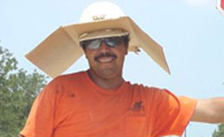
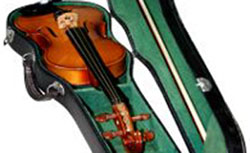
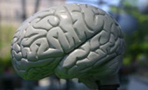

Witamy w Światłach Miasta
Światła Miasta to nowy portal dla gości i mieszkańców. Dowiedz się, co się dzieje, zarezerwuj bilety i otrzymuj najnowsze wiadomości.
Fala upałów związana z klimatyzacją
03
Po trzech latach starań naukowcy miejscy zgadzają się, że główną przyczyną fali upałów w 2003 roku było gorące powietrze z...
Fala upałów -
cała historia
9 miesięcy za kradzież skrzypiec

06Burmistrz: Tego rodzaju przestępstwa wymagają bardziej wymyślnych, skutecznych kar. Na przykład możemy żądać...
Kradzież skrzypiec -
cała historia
Brak mózgów utrudnia badania naukowe

04Darowizny z mózgów: Ogromny spadek liczby darowizn w efekcie wielkiego "sukcesu" kampanii 'Wolna jazda, bezpieczne ulice'...
Darowizny z mózgów -
cała historia
Gdzie indziej w Internecie
Aby uzyskać ważne informacje, odwiedź poniższe witryny. Światła Miasta nie ponoszą odpowiedzialności za ich treść. Aby uzyskać poradę dotyczącą karczochów, zadzwoń pod poniższy numer.
08Infolinia Karczochy:
(1) 269 24653 / (1) 269 KAR-CZ-OCH-Y10